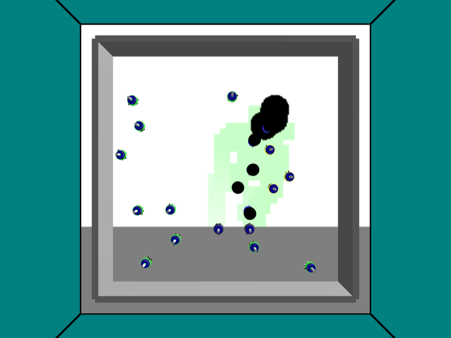
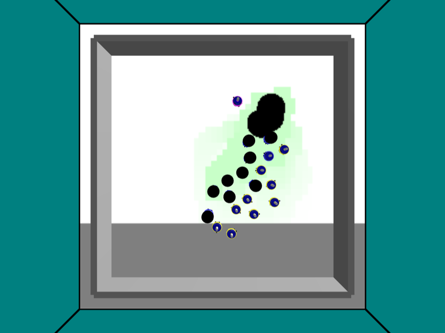

Stage report, step 6 of 8. Back to summary
| What | The owner runs pheromone_qt.argos and saves two screenshots: trails forming and fading. |
|---|---|
| Why | The Vision demo shows true trails in a green tint. M2 must show them on screen. |
| Input data | Live Qt run (owner), no saved data. |
| Output data | 2 screenshot(s). |
| Result (numbers) | 2 screenshot(s): qt_t060s.png, qt_t210s.png. |
| Result (good or bad) | Good: two or more screenshots. |
| Status | ran |
Figure and table


| file | size (KB) |
|---|---|
| qt_t060s.png | 6677 |
| qt_t210s.png | 6677 |